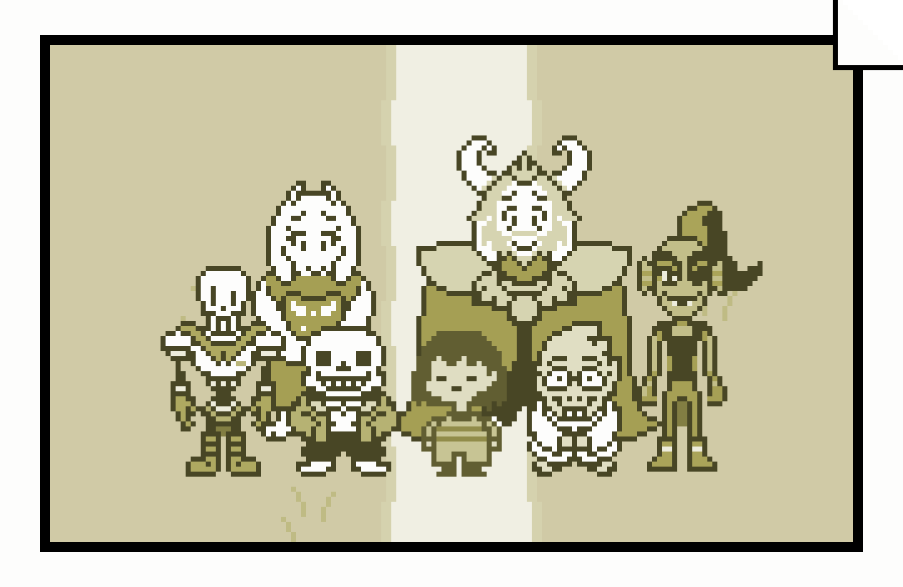

* Welcome to the (Unofficial) Guide to Undertale. I'm Dr. Alphys.
You may not know me now but you'll learn more about me as you go
through the site. Undertale is an
RPG game made by Toby Fox and
released in 2015. It is currently available on multiple platforms.
To buy the game, please go to:
* Welcome to the (Unofficial) Guide to Undertale. I'm Dr. Alphys.
You may not know me now but you'll learn more about me as you go
through the site. Undertale is an
RPG game made by Toby Fox and
released in 2015. It is currently available on multiple platforms.
To buy the game, please go to:
undertale.com
(Unofficial) Guide to Undertale
